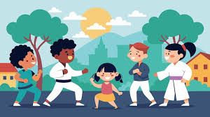
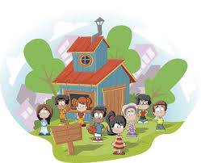

社區服務志工營
社區服務志工營旨在培養青少年的社會責任感與服務精神，透過實際參與社區關懷、環境整理、老人陪伴等志工活動，讓每位參與者學會關懷他人、增進溝通與合作能力，並從中獲得成就感與成長體驗，促進個人與社區的共同發展。
地點:宜蘭縣員山國小
時間:2025/9/10(三) ~ 2025/9/15(一)
| 日期 | 上午課程 | 下午課程 |
|---|---|---|
| 9/10 | 開幕式 & 團隊分組 | 相見歡 |
| 9/11 | 運動會 | 營火晚會 |
| 9/12 | 課程工作坊 | 課程工作坊 |
| 9/13 | 專題講座 | 小組表演 |
| 9/14 | 手做課程 | 心得分享 |
| 9/15 | 閉幕式 | 合影 & 活動結束 |


參加者 A：
這次社區服務志工營讓我深刻體會到服務的重要性，也學會如何與不同背景的人合作完成任務。
參加者 B：
透過實地參與社區活動，我了解了社區的需求與挑戰，也提升了自己的溝通與問題解決能力。
參加者 C：
活動過程中不僅學到新知識，也與夥伴建立了深厚的友誼，這段經驗讓我十分難忘。